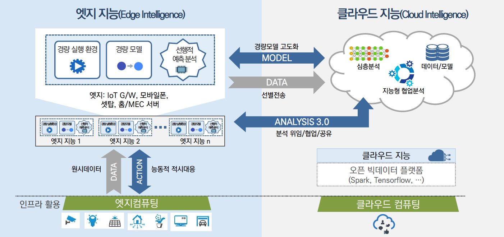

부하분산과 능동적 적시대응을 위한 빅데이터 엣지 분석 기술

연구내용
모델 압축 기술 (Model Compression)
- (요약) 가지치기, 이진화, 양자화 및 허프만 코딩 등의 기법을 선별적·통합적으로 적용하여 학습 시 훈련 데이터의 표현력 (Representation)은 충분히 습득하면서 동시에 불필요한 가중치 값을 효과적으로 제거하거나 특정 수치로 단순화시켜 연산 효율을 개선하는 모델 경량화 기술 분야
- (관련연구) Deep Compression 2016, XNOR-Net 2016,BMXNet 2017
효율적인 합성곱 필터 기술 (Efficient Convolution Layer)
- (요약) CNN 계열 모델 학습 시 가장 큰 계산량을 요구하는 합성곱 연산을 경량화하여 학습에 필요한 파라미터 개수를 줄임으로써, 모델 크기 및 연산량 축소에 기여하는 기술 분야. 현재 Depthwise Convolution, Inverted Residual 및 Linear Bottlenecks 기법을 기반으로 제안된 Mobilenet v2가 가장 우수한 성능을 보이는 것 확인됨
- (관련연구) Inception 2014, Mobilenet v1/v2 2017/2018, Xception 2017, ShuffleNet 2017
모델 분산 처리 기술 (Distributed Learning and Inference)
- (요약) 모바일 Onloading 및 클라우드 Offloading 방식을 절충한 형태의 추론 수행하거나, 신경망 그래프를 분할하여 개별 CPU/GPU로 분산 학습하는 연구 분야. 엣지 기반 추론의 지연시간 축소 및 에너지 절감 효과를 제공하거나, 분산 학습을 통한 성능 개선의 효과가 있음
- (관련연구) MCDNN 2016, Neurosurgeon 2017,Device Placement Optimization with Reinforcement Learning 2017
경량 모델 자동 탐색 기술(Model Searching Automation)
- (요약) 강화 학습을 통해 모바일 추론에 최적화된 CNN 모델 구조를 탐색하는 과정을 자동화하거나, 연산량 대비 모델 압축비 조정을 자동화하는 연구 기법. 모바일 추론에 따른 정확도, 지연 시간, 에너지 소모량 등을 주요한 성능 지표로 선정하고 이들을 조율하는데 중점을 두고 있음
- (관련연구) MnasNet 2018, NetAdapt 2018, ADC 2018
자원 제약형 모델 기술(Resource Constrained Model)
- (요약) 기기의 메모리, 에너지 사용을 최소화하면서, 적절한 학습·추론 성능을 보장하기 위해 자원 제약형 임베디드 또는 IoT 기기에 특화된 머신러닝 모델을 제안하는 연구 동향. 신경망이 아닌 Tree learner, k-Nearest Neighbor 등의 머신러닝 테크닉을 활용하며, Weight/Sparse Factorization 등의 경량화 연산을 지원하는 별도의 딥러닝 툴킷 개발, 부동/고정 소수점 연산을 Bitwise 연산으로 대체 및 네트워크 이진화가 주요 연구 기법으로 제안되고 있음
- (관련연구) Bonsai 2015, DXTK 2016, BNN 2016, ProtoNN 2017, TinyDL 2017, TBNs 2017
하드웨어 가속화 기술 (Hardware Acceleration)
- (요약) 벡터/행렬 연산을 병렬 처리하기 위한 전용 하드웨어 TPU(Tensor Processing Unit), On-Device AI 응용 추론을 위한 전용 VPU(Visual Processing Unit) 프로세스 및 GPU Cluster 기반 가속기 등의 연구개발이 주요 IT 기업에 의해 주도되고 있음
- (관련연구) Google TPU 2016, Intel Movidius 2017, SKT AIX (AI Inference Accelerator) 2018
연구실적
MicroNet Challenge (hosted at NeurIPS 2019)
-(요약) Contestants will compete to build the most efficient model that solves the target task to the specified quality level. The competition is focused on efficient inference, and uses a theoretical metric rather than measured inference speed to score entries. We hope that this encourages a mix of submissions that are useful on today’s hardware and that will also guide the direction of new hardware development.
-(태스크)CIFAR-100 Classification: A widely popular image classification dataset of small images. The dataset is composed of 50,000 training images and 10,000 development images. Entries are required to achieve 80% top-1 accuracy on the test set.
-(결과) KAIST AI team achieved the 2nd place and the 3rd place in the MicroNet Challenge 2019.
-(링크) MicroNet Challenge
RecSys – ACM Recommender Systems
-(요약)In a session-based recommendation service, currently offered by many online companies including trivago, it is important to effectively incorporate user interactions into recommendations. However, a major challenge lies in the fact that both inter-session and intra-session contexts should be considered at the same time for recommendations to become effective. To address this issue, we propose a pipelined hybrid recommender system that considers the two contexts simultaneously via weighted summation of loss functions designed for the combination of a recurrent neural network (RNN) and a convolutional neural network (CNN). With the hybrid system, our team, OSI LAB, achieved the final score of 0.670167 and reached the 16th place in the RecSys Challenge 2019. Our source code is available from https://github.com/jhoon-oh/recsys2019challenge.
-(링크) A Pipelined Hybrid Recommender System for Ranking the Items on the Display
전자통신동향분석(경량딥러닝 기술동향)
-(요약) Considerable accuracy improvements in deep learning have recently been achieved in many applications that require large amounts of computation and expensive memory. However, recent advanced techniques for compacting and accelerating the deep learning model have been developed for deployment in lightweight devices with constrained resources. Lightweight deep learning techniques can be categorized into two schemes: lightweight deep learning algorithms (model simplification and efficient convolutional filters) in nature and transferring models into compact/small ones (model compression and knowledge distillation). In this report, we briefly summarize various lightweight deep learning techniques and possible research directions.
-(링크) Recent R&D Trends for Lightweight Deep Learning
전자통신동향분석(자동 기계학습(AutoML) 기술동향)
-(요약) The performance of machine learning algorithms significantly depends on how a configuration of hyperparameters is identified and how a neural network architecture is designed. However, this requires expert knowledge of relevant task domains and a prohibitive computation time. To optimize these two processes using minimal effort, many studies have investigated automated machine learning in recent years. This paper reviews the conventional random, grid, and Bayesian methods for hyperparameter optimization (HPO) and addresses its recent approaches, which speeds up the identification of the best set of hyperparameters. We further investigate existing neural architecture search (NAS) techniques based on evolutionary algorithms, reinforcement learning, and gradient derivatives and analyze their theoretical characteristics and performance results. Moreover, future research directions and challenges in HPO and NAS are described.
-(링크) Recent Research & Development Trends in Automated Machine Learning
Acknowledgement
This work was supported by Institute for Information &
Communications Technology Promotion (IITP) grant funded
by the Korea government (MSIT) [No.2018-0-00278,
Development of Big Data Edge Analytics SW Technology
for Load Balancing and Active Timely Response].